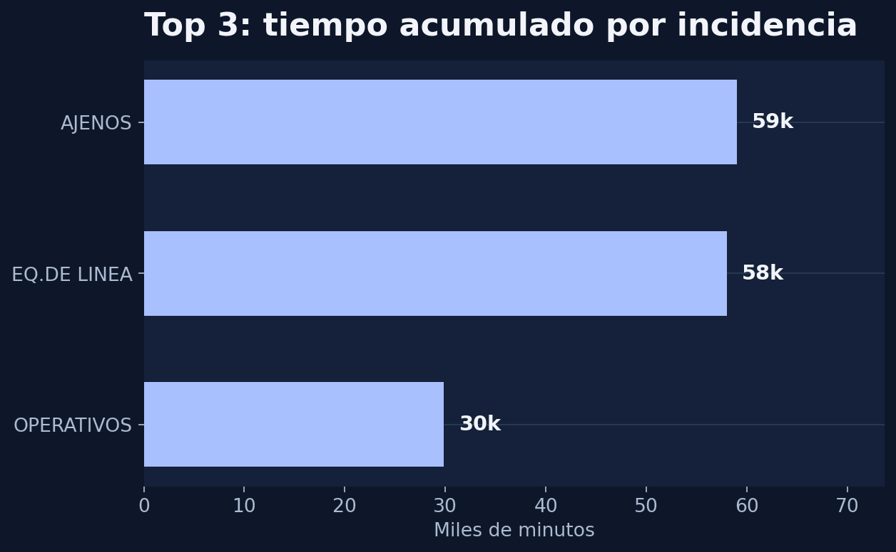
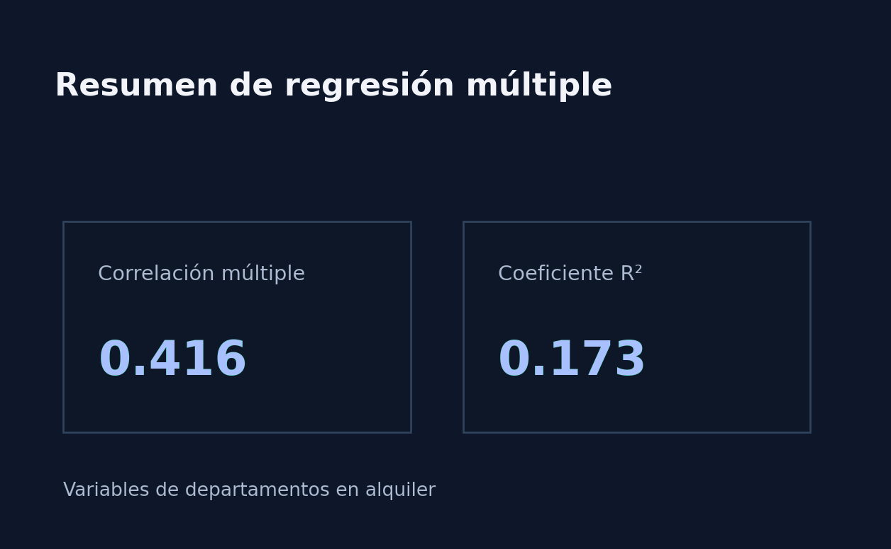
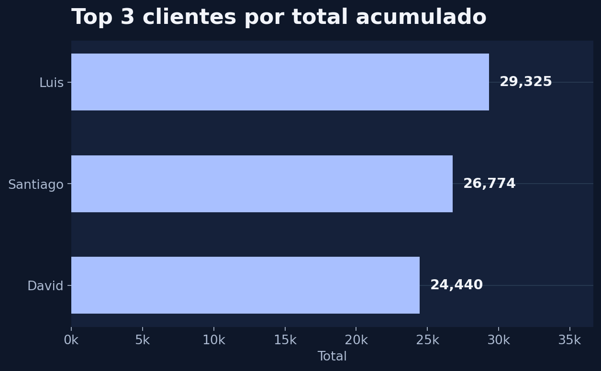
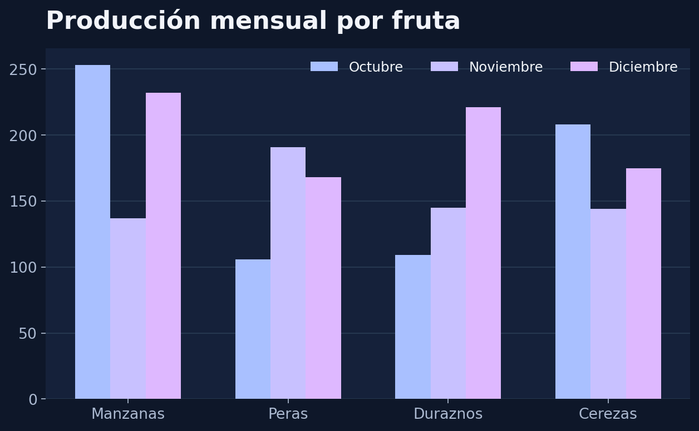

01
Análisis exploratorio de datos comerciales
Ejercicio de estadística descriptiva aplicado a un caso comercial, con análisis de correlación y priorización mediante diagrama de Pareto.
Archivo académico
Ejercicios trabajados a partir de material de formación y adaptados en práctica. Se conservan como evidencia de aprendizaje, no como foco profesional actual.
Una selección breve de análisis exploratorio, modelado y comunicación de datos. El formato pone el preview y el criterio de trabajo primero, sin competir con los casos profesionales del portfolio.

Ejercicio de estadística descriptiva aplicado a un caso comercial, con análisis de correlación y priorización mediante diagrama de Pareto.

Ejercicio de regresión lineal múltiple para explorar la relación entre variables de departamentos en alquiler y sus valores de referencia.

Práctica de organización de información de clientes para trabajar atributos, relaciones y una base ordenada para el análisis posterior.

Selección de tipos de gráficos y representación de información para comunicar hallazgos de forma clara y adecuada al contexto.
Archivos fuente disponibles a pedido.